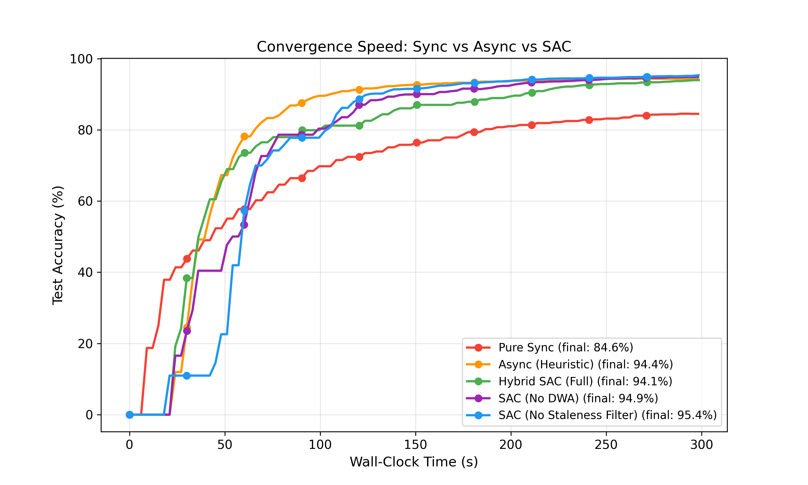
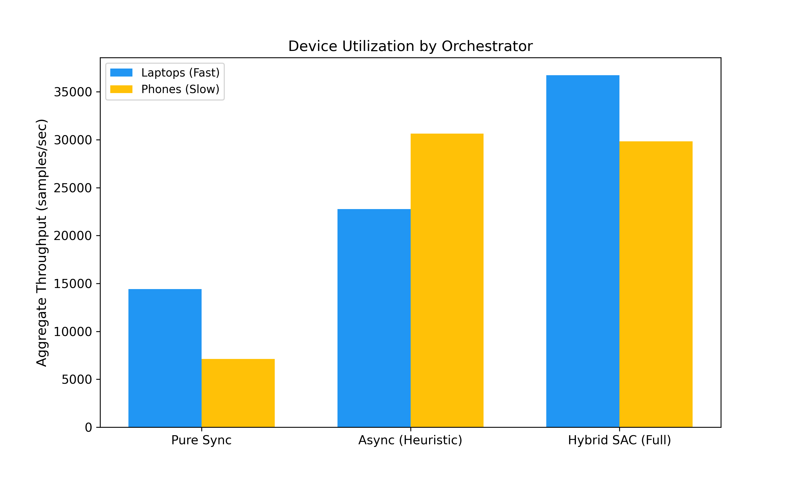

Distributed training across the laptops and phones people already have. Devices can join or drop out mid-run without stopping training. Built with a team of 4.
Most distributed training assumes a dedicated cluster of identical machines. SA2 uses personal devices instead, which are uneven: a gaming laptop finishes a round many times faster than a phone, and phones drop off Wi-Fi. If the server waits for everyone each round, the fast machines sit idle. If it waits for no one, slow devices' updates arrive late and hurt the model. SA2 handles this with a time-limited round and a learned policy for how long to wait.
Each round, a Soft Actor-Critic (SAC) reinforcement-learning agent looks at the current state of the fleet and picks three things: how long to wait for gradients (Toptimal), how much to sparsify them (Sratio), and how stale an update may be before it is dropped (Smax). The agent is warm-started by imitating a hand-written heuristic, then keeps learning online.
Each configuration was run once for 5 minutes on MNIST with the same 6 devices:
| Strategy | Accuracy |
|---|---|
| Synchronous (wait for every device) | 84.62% |
| Plain asynchronous | 87.86% |
| Fixed heuristic wait time | 94.36% |
| SAC controller | 94.07% |
| SAC without dynamic workload allocation | 94.91% |
| SAC without the staleness filter | 95.36% |
What this shows: bounding each round in time, instead of waiting for the slowest phone, is worth about 9–10 points over synchronous training in the same 5 minutes. The SAC controller performs about the same as a well-tuned fixed heuristic but does not beat it, and two ablations scored slightly higher. With one run per setting these differences are within noise, so the honest conclusion is that SAC matches the heuristic without hand-tuning, not that it outperforms it.

SAC vs. heuristic asynchronous vs. synchronous training over the 5-minute run.

Combined training throughput (samples/sec) from the 3 laptops and the 3 phones under each strategy. Synchronous rounds leave both groups underused. Phones ran the CampusFL-Worker Android app.
┌──────────────────────────────────────────┐
│ Controller (FastAPI :8000) │
│ │
│ Global model · Dataset · Gradient buf │
│ POST /register │
│ GET /get_task (weights + batch) │
│ POST /send_gradients │
└────────────────┬─────────────────────────┘
│
┌─────────┼─────────┐
│ │ │
┌────┴───┐ ┌───┴───┐ ┌───┴───┐
│Worker 1│ │Worker2│ │WorkerN│
│ laptop │ │ phone │ │ slow │
│ k=30 │ │ k=15 │ │ k=8 │
└────────┘ └───────┘ └───────┘
(join or leave at any time — training continues)
k = local training steps per task, set from each worker's measured throughput: 30 for fast laptops (>500 samples/s), 15 for typical devices and phones, 8 for very slow ones.
Workers report their measured samples per second, and the controller sizes each task to match: fast laptops get 30 local steps, phones 15, and very slow devices 8. Batch size is also scaled by each device's resource profile. Turning this off (fixed k for everyone) was one of the ablations.
The controller tracks how many global steps have elapsed since a gradient was computed. Gradients older than the staleness threshold are discarded rather than applied — preventing stale updates from corrupting the model.
Phones join through the CampusFL-Worker Android app, or by running the Python worker under Termux.
Write-ups, study notes and evaluation reports: